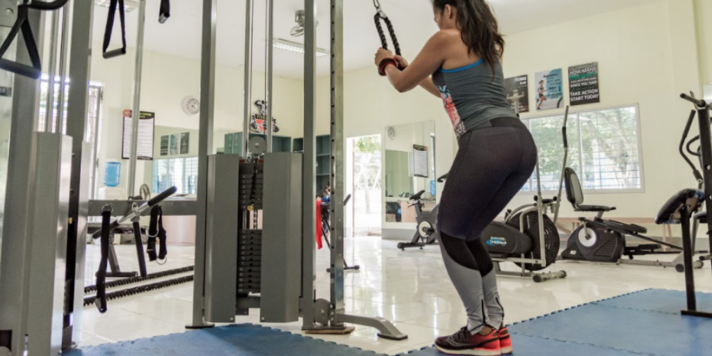
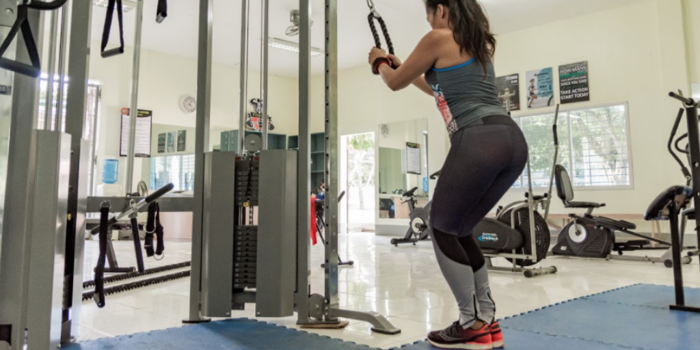

“Sweating is a good thing.” This tagline creates the need to have a fitness center. Wellness and fitness are a recognized need in CTU Danao. Exercising regularly does not just make one physically fit but mentally sound as well. Students, faculty, and staff may proceed to the fitness center to do stress-release routines from the day’s taxing work. The center houses new gym equipment, which includes impulse power rack, impulse cross over lift, impulse bench, ten (10) pairs of a dumbbell set, impulse commercial spinning bike, tri-grip Olympic rubber weight plates, Olympic bar, Olympic EZ curl bar, an impulse at pull-down, impulse leg extension and others. As the campus aims to make this fitness center a venue for health, it will equip the center with state-of-the-art gym equipment.
 
